Configure Google Workspaces authentication with Amazon Managed Grafana using SAML¶
In this guide, we will walk through how you can setup Google Workspaces as an identity provider (IdP) for Amazon Managed Grafana using SAML v2.0 protocol.
In order to follow this guide you need to create a paid Google Workspaces account in addition to having an Amazon Managed Grafana workspace created.
Create Amazon Managed Grafana workspace¶
Log into the Amazon Managed Grafana console and click Create workspace. In the following screen, provide a workspace name as shown below. Then click Next:
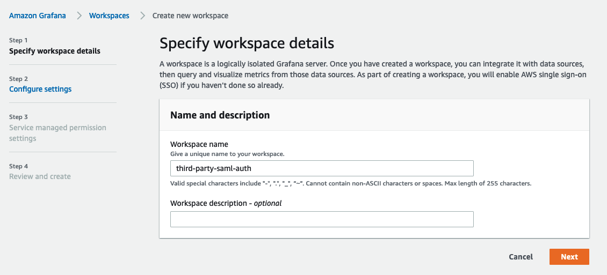
In the Configure settings page, select Security Assertion Markup Language (SAML) option so you can configure a SAML based Identity Provider for users to log in:
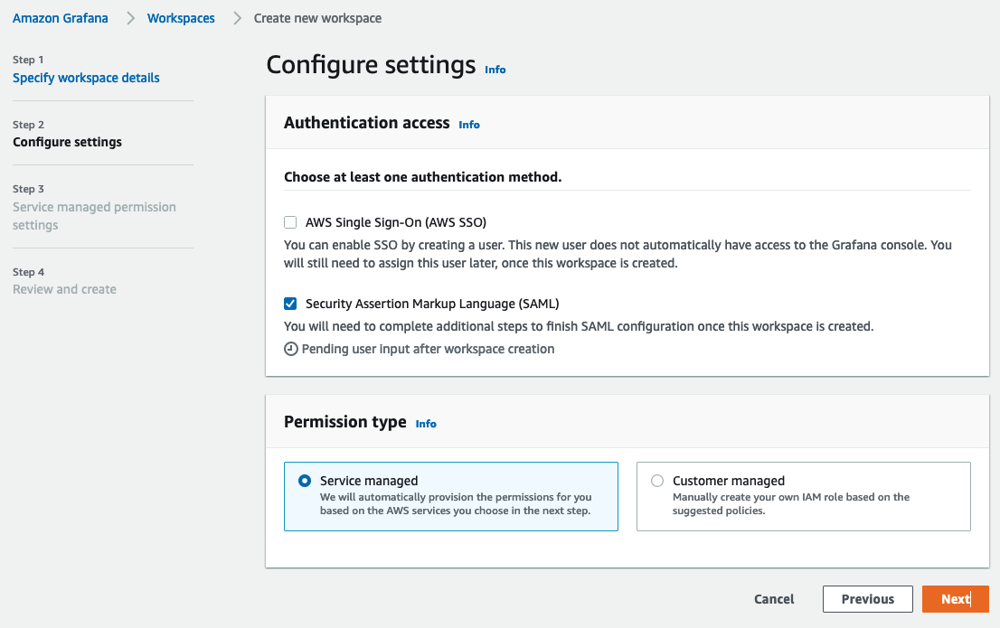
Select the data sources you want to choose and click Next:
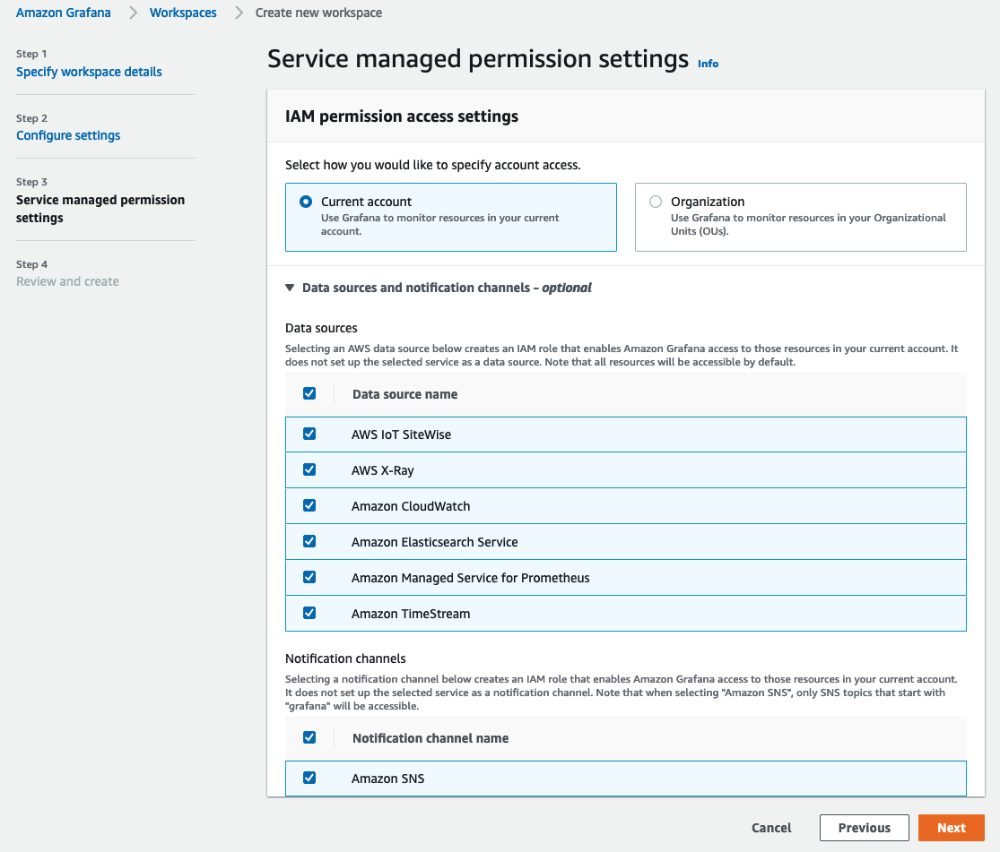
Click on Create workspace button in the Review and create screen:
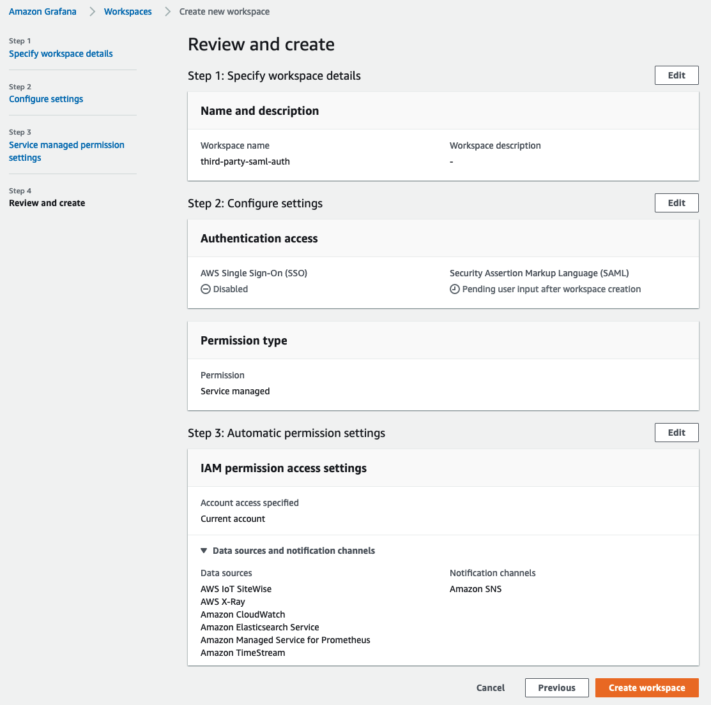
This will create a new Amazon Managed Grafana workspace as shown below:
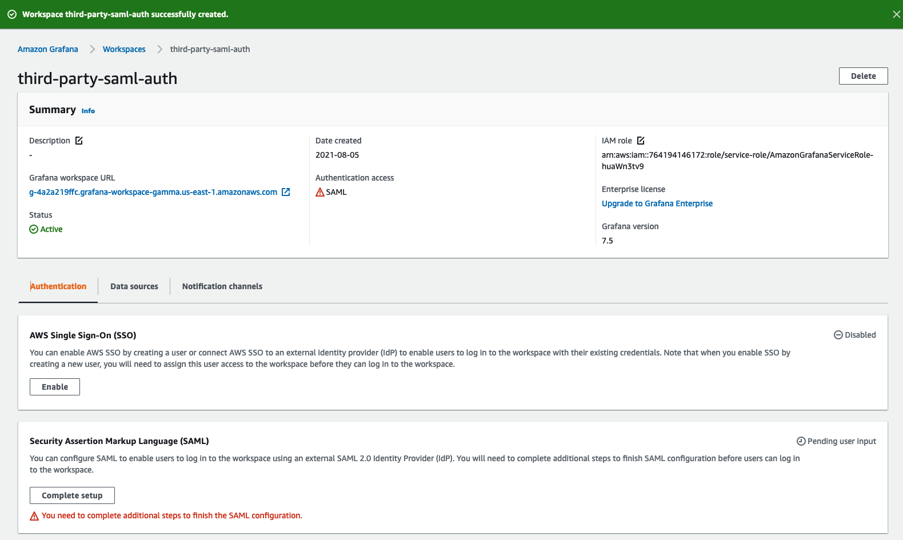
Configure Google Workspaces¶
Login to Google Workspaces with Super Admin permissions and go to Web and mobile apps under Apps section. There, click on Add App and select Add custom SAML app. Now give the app a name as shown below. Click CONTINUE.:
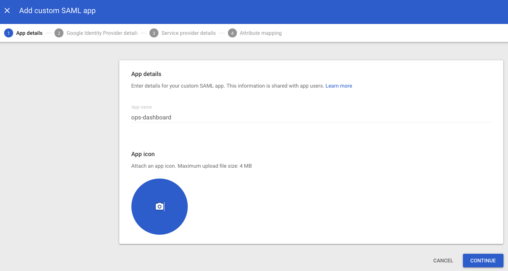
On the next screen, click on DOWNLOAD METADATA button to download the SAML metadata file. Click CONTINUE.
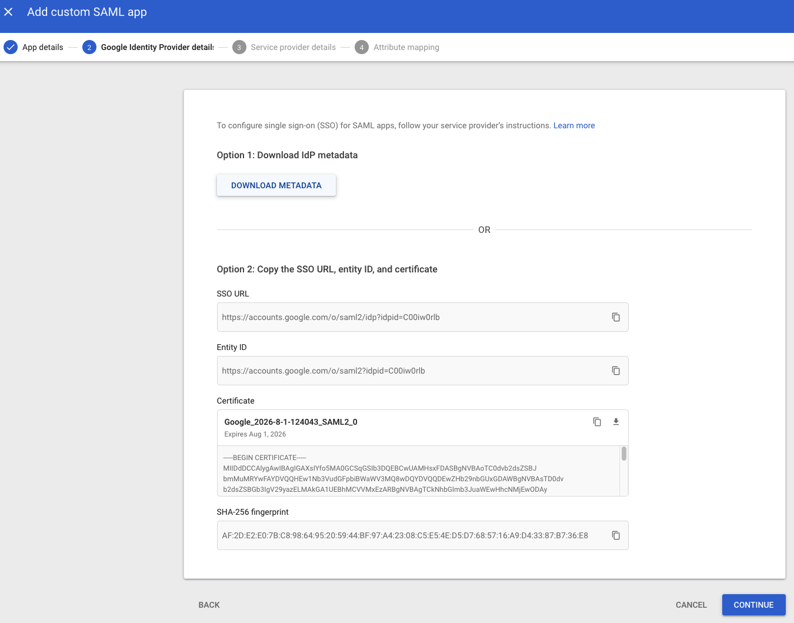
On the next screen, you will see the ACS URL, Entity ID and Start URL fields. You can get the values for these fields from the Amazon Managed Grafana console.
Select EMAIL from the drop down in the Name ID format field and select Basic Information > Primary email in the Name ID field.
Click CONTINUE.
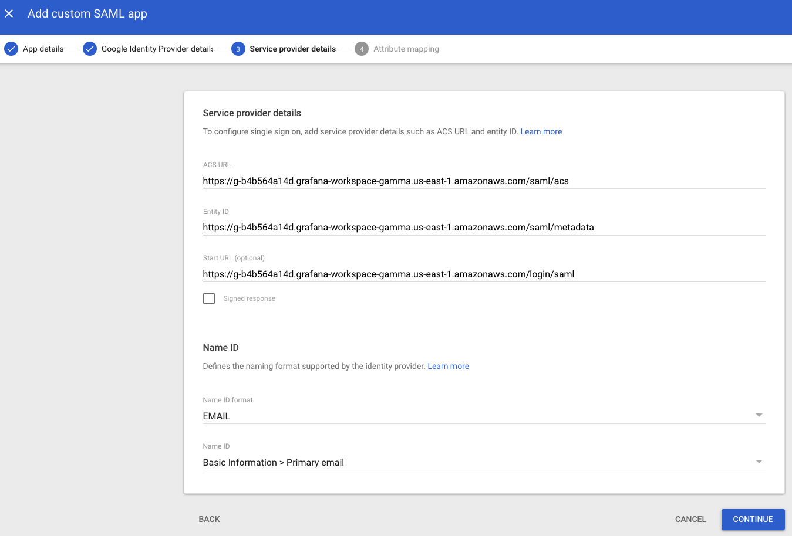
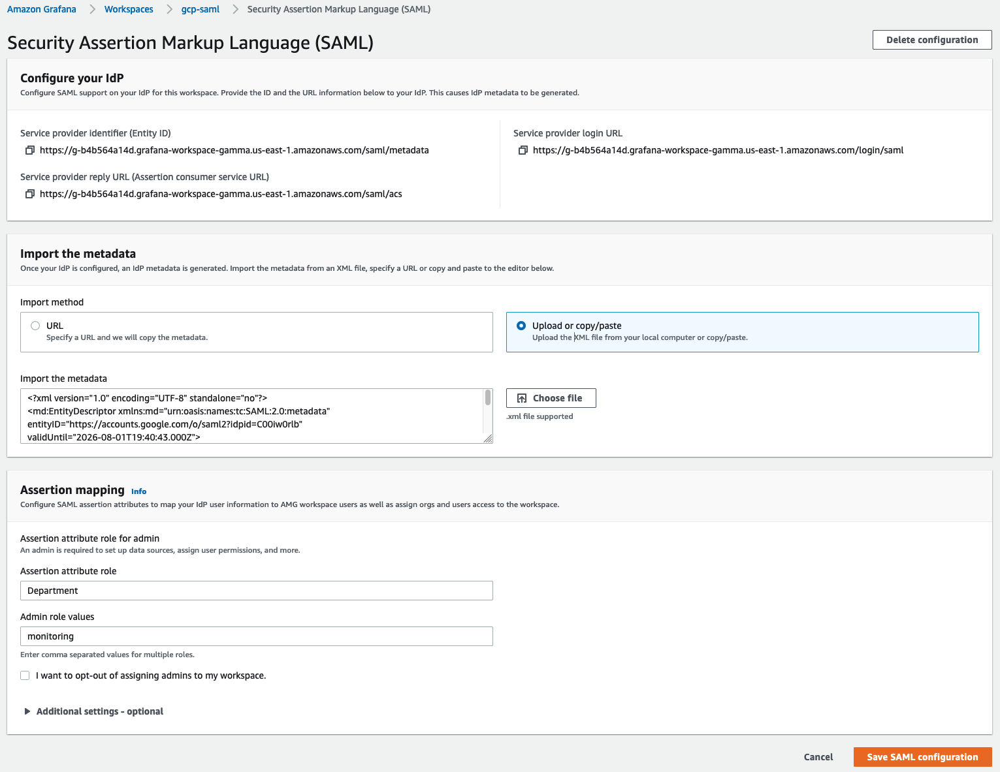
In the Attribute mapping screen, make the mapping between Google Directory attributes and App attributes as shown in the screenshot below
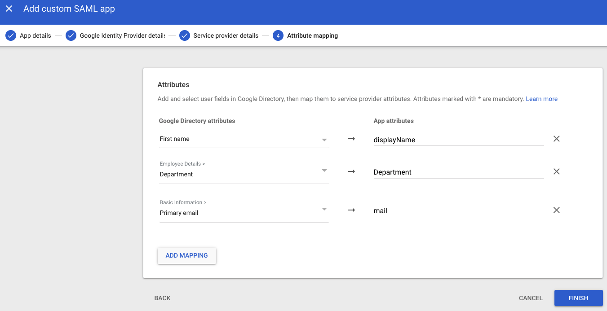
For users logging in through Google authentication to have Admin privileges in Amazon Managed Grafana, set the Department field’s value as monitoring. You can choose any field and any value for this. Whatever you choose to use on the Google Workspaces side, make sure you make the mapping on Amazon Managed Grafana SAML settings to reflect that.
Upload SAML metadata into Amazon Managed Grafana¶
Now in the Amazon Managed Grafana console, click Upload or copy/paste option and select Choose file button to upload the SAML metadata file downloaded from Google Workspaces, earlier.
In the Assertion mapping section, type in Department in the Assertion attribute role field and monitoring in the Admin role values field. This will allow users logging in with Department as monitoring to have Admin privileges in Grafana so they can perform administrator duties such as creating dashboards and datasources.
Set values under Additional settings - optional section as shown in the screenshot below. Click on Save SAML configuration:
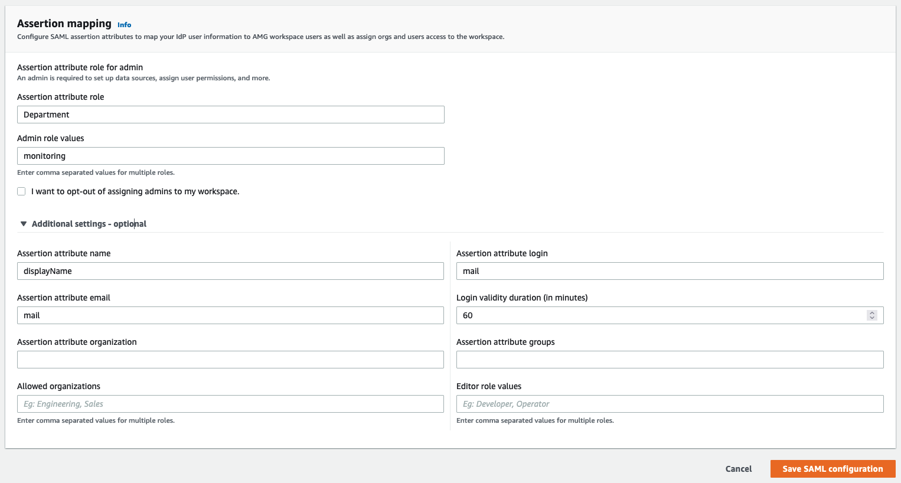
Now Amazon Managed Grafana is set up to authenticate users using Google Workspaces.
When users login, they will be redirected to the Google login page like so:
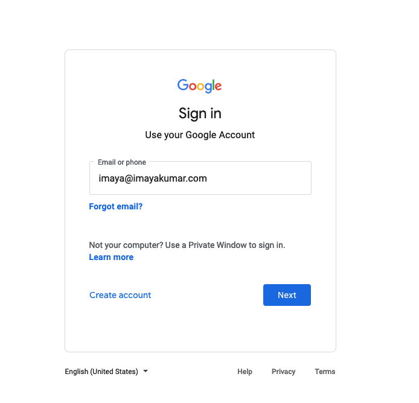
After entering their credentials, they will be logged into Grafana as shown in the screenshot below.
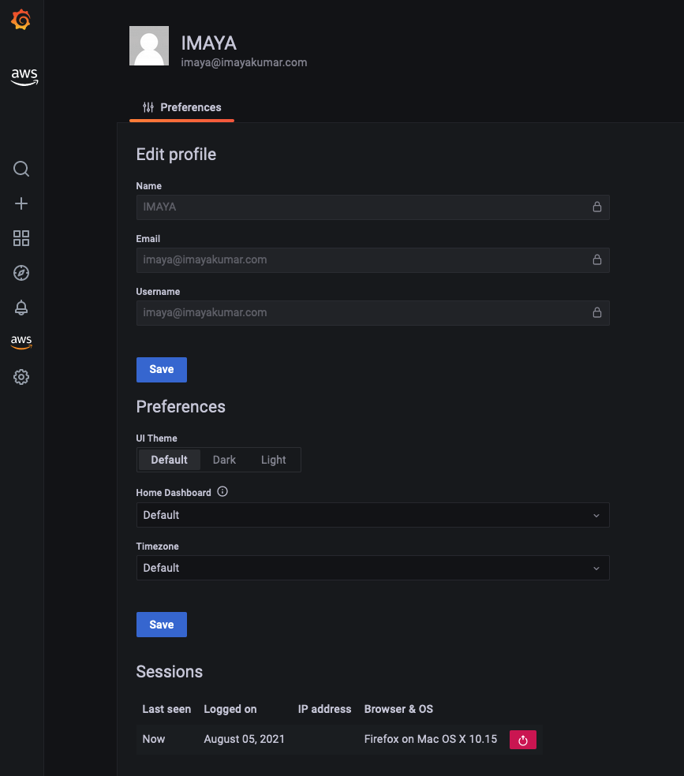
As you can see, the user was able to successfully login to Grafana using Google Workspaces authentication.